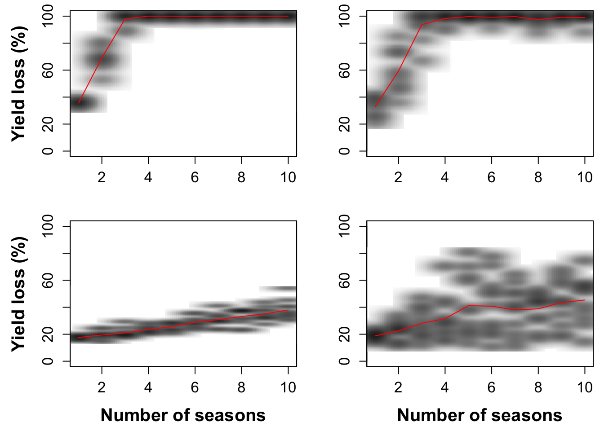
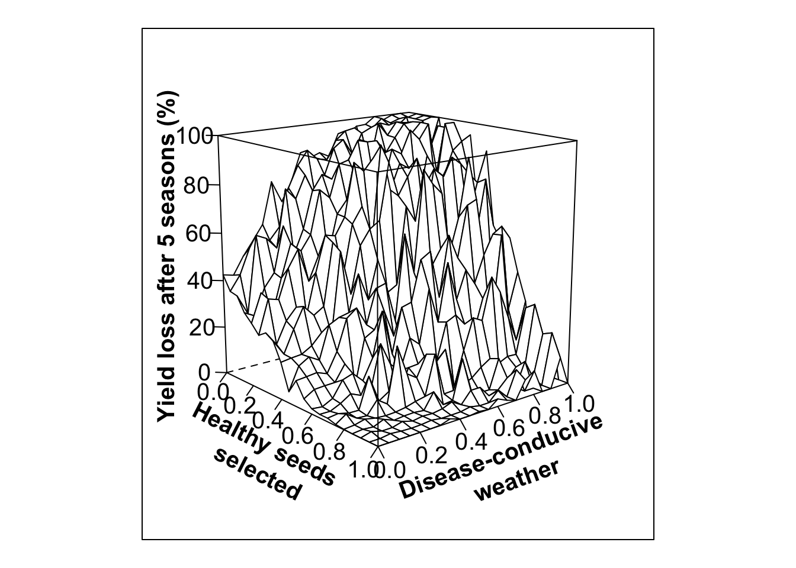

Preliminary version of seedHealth package vignette v8
Slides for ths section can be found here:
seedHealth package applications
This package provides a scenario analysis for evaluating outcomes for integrated seed health strategies. It is based on and builds on the analyses and code from
Thomas-Sharma, S., Andrade-Piedra, J., Carvajal Yepes, M., Hernandez Nopsa, J., Jeger, M., Jones, R., Kromann, P., Legg, J., Yuen, J., Forbes, G., and Garrett, K. A. 2017. A risk assessment framework for seed degeneration: Informing an integrated seed health strategy for vegetatively-propagated crops. Phytopathology 107:1123-1135.
Open access link for paper: https://apsjournals.apsnet.org/doi/10.1094/PHYTO-09-16-0340-R
Link for online Shiny interface for exploring the seedHealth model: https://yanru-xing.shinyapps.io/SDAppvX1/
Getting the seedHealth package from GitHub
options(repos=structure(c(CRAN="https://cran.cnr.berkeley.edu/")))
library(devtools)
# use devtools function install_github to install the seedHealth version available on GitHub
# this is only necessary once, until a new version is available
# uncomment the following line if you have not installed seedHealth yet, or a new version is available
#devtools::install_github("GarrettLab/seedHealth")
library(seedHealth)The code below uses two other R packages - these will need to be installed if they have not yet been installed. The commands for installing are commented out below, but the “#” in front of the command line can be removed to install.
Function onesim
This function evaluates a time series of yield loss due to seed degeneration across seasons. Weather conduciveness to disease and other factors are included as stochastic components of the model.
Arguments in function onesim
There are several arguments that can be modified in function onesim to describe how seed degeneration occurs over time. These arguments are described in more detail in a table in Thomas-Sharma et al. 2017.
pHSinit the initial proportion of healthy seed, numeric or numeric vector. Kx
the total number of plants, positive interger, numeric or numeric vector. betax
the maximum seasonal transmission rate, numeric or numeric vector. wxtnormm
the environmental effect on transmission rate (mean of underlying normal distribution prior to truncation), numeric or numeric vector. wxtnormsd
the environmental effect on transmission rate (standard deviation of underlying normal distribution prior to truncation), numeric or numeric vector. hx
the host effect on transmission rate, numeric or numeric vector. mxtnormm
the vector management effect on transmission rate (mean of underlying normal distribution prior to truncation), numeric or numeric vector. mxtnormsd
the vector management effect on transmission rate (standard deviation of underlying normal distribution prior to truncation), numeric or numeric vector. axtnormm
the roguing effect in terms of decreased DP (mean of underlying normal distribution prior to truncation), numeric or numeric vector. axtnormsd
the roguing effect in terms of decreased DP (standard deviation of underlying normal distribution prior to truncation), numeric or numeric vector. rx
the reversion rate, numeric or numeric vector. zxtnormm
the proportional selection against diseased plants (mean of underlying normal distribution prior to truncation), numeric or numeric vector. zxtnormsd
the proportional selection against diseased plants (standard deviation of underlying normal distribution prior to truncation), numeric or numeric vector. gx
the seed production rate in healthy plants, numeric or numeric vector. cx
the proportional seed production rate in diseased plants, numeric or numeric vector. phix
the proportion clean seed purchased, numeric or numeric vector. nseasons
the number of seasons, numeric or numeric vector. HPcut
the proportion healthy plant number cutoff, numeric or numeric vector. pHScut
the proportion healthy seed cutoff, numeric or numeric vector. maY the maximum attainable yield, end of season, in the absence of disease, numeric or numeric vector. miY the minimum yield when all plants are diseased (useable yield despite disease), numeric or numeric vector. thetax
the rate of decline of Yld with increasing disease incidence, numeric or numeric vector. Ex
the amount of external inoculum around field, numeric or numeric vector.
Example of plotting seed degeneration effects over time
Note that this command produces results similar to those from the online Shiny interface for seedHealth
install.packages("RColorBrewer") # remove the initial '#' if this is not yet installed##
## The downloaded binary packages are in
## /var/folders/3f/wdpyyh2x0r5c5j0s55mwx8d80000gn/T//RtmpbMJelH/downloaded_packageslibrary(RColorBrewer)
out1 <- onesim(pHSinit=0.8, Kx = 100, betax=0.02, wxtnormm=0.8, wxtnormsd= 0.1, hx=1, mxtnormm=1, mxtnormsd=0, axtnormm=1, axtnormsd=0, rx=0.1, zxtnormm=1, zxtnormsd= 0, gx=4,cx=0.9, phix=0, nseasons=10, HPcut=0.5, pHScut=0.5,maY=100,miY=0,thetax=0.2, Ex=0)
int1 <- out1$outm$YL
seas1 <- out1$outm$season
# nreals is the number of realizations - higher values gives a smoother plot
nreals <- 10
for(i in 1:nreals){
out1 <- onesim(pHSinit=0.8, Kx = 100, betax=0.02, wxtnormm=0.8, wxtnormsd= 0.1, hx=1, mxtnormm=1, mxtnormsd=0, axtnormm=1, axtnormsd=0, rx=0.1, zxtnormm=1, zxtnormsd= 0, gx=4,cx=0.9, phix=0, nseasons=10, HPcut=0.5, pHScut=0.5,maY=100,miY=0,thetax=0.2, Ex=0)
int1 <- rbind(int1,out1$outm$YL)
seas1 <- rbind(seas1,out1$outm$season)
}
smoothScatter(seas1,int1, xlab='', ylab='Yield loss (%)',ylim=c(0,100), font.lab=2, cex.lab=1.5, cex.axis=1.25, nrpoints=0, colramp=colorRampPalette(brewer.pal(8,"Greys")))
lines(colMeans(seas1), colMeans(int1), type='l', col='red')
# Could produce a summary table
#write.table(x=int1, file=paste('int_out1','csv', sep='.'), sep=',',append=F, row.names=FALSE)Fig. 2. from Thomas-Sharma et al. 2017: Long-term yield loss under no management scenarios
par(mfrow=c(2,2), mar=c(4,4.4,0.5,0.5), oma=c(0.5,0.5,0.25,0.25))
out1 <- onesim(pHSinit=0.8, Kx = 100, betax=0.02, wxtnormm=0.8, wxtnormsd= 0.1, hx=1, mxtnormm=1, mxtnormsd=0, axtnormm=1, axtnormsd=0, rx=0.1, zxtnormm=1, zxtnormsd= 0, gx=4,cx=0.9, phix=0, nseasons=10, HPcut=0.5, pHScut=0.5,maY=100,miY=0,thetax=0.2, Ex=0)
int1 <- out1$outm$YL
seas1 <- out1$outm$season
# temporary note: wxd and wdsamp were removed
# nreals is the number of realizations - higher values gives a smoother plot
nreals <- 10
for(i in 1:nreals){
out1 <- onesim(pHSinit=0.8, Kx = 100, betax=0.02, wxtnormm=0.8, wxtnormsd= 0.1, hx=1, mxtnormm=1, mxtnormsd=0, axtnormm=1, axtnormsd=0, rx=0.1, zxtnormm=1, zxtnormsd= 0, gx=4,cx=0.9, phix=0, nseasons=10, HPcut=0.5, pHScut=0.5,maY=100,miY=0,thetax=0.2, Ex=0)
int1 <- rbind(int1,out1$outm$YL)
seas1 <- rbind(seas1,out1$outm$season)
}
# Could produce an about table
# write.table(x=int1, file=paste('int_out1','csv', sep='.'), sep=',',append=F, row.names=FALSE)
smoothScatter(seas1,int1, xlab='', ylab='Yield loss (%)',ylim=c(0,100), font.lab=2, cex.lab=1.5, cex.axis=1.25, nrpoints=0, colramp=colorRampPalette(brewer.pal(8,"Greys")))
lines(colMeans(seas1), colMeans(int1), type='l', col='red')
out2 <- onesim(pHSinit=0.8, Kx = 100, betax=0.02, wxtnormm=0.8, wxtnormsd= 0.3, hx=1, mxtnormm=1, mxtnormsd=0, axtnormm=1, axtnormsd=0, rx=0.1, zxtnormm=1, zxtnormsd= 0,gx=4,cx=0.9, phix=0, nseasons=10, HPcut=0.5, pHScut=0.5,maY=100,miY=0,thetax=0.2, Ex=0)
int2 <- out2$outm$YL
seas2 <- out2$outm$season
# for speed, only "i in 1:10"
for(i in 1:nreals){ # higher values make a smoother plot
out2 <- onesim(pHSinit=0.8, Kx = 100, betax=0.02, wxtnormm=0.8, wxtnormsd= 0.3, hx=1, mxtnormm=1, mxtnormsd=0, axtnormm=1, axtnormsd=0, rx=0.1, zxtnormm=1, zxtnormsd= 0, gx=4,cx=0.9, phix=0, nseasons=10, HPcut=0.5, pHScut=0.5,maY=100,miY=0, thetax=0.2, Ex=0)
int2 <- rbind(int2,out2$outm$YL)
seas2 <- rbind(seas2,out2$outm$season)
}
#write.table(x=int2, file=paste('int_out2','csv', sep='.'), sep=',',append=F, row.names=FALSE)
smoothScatter(seas2,int2, xlab='', ylab='',ylim=c(0,100), font.lab=2, cex.lab=1.5, cex.axis=1.25, nrpoints=0, colramp=colorRampPalette(brewer.pal(8,"Greys")))
lines(colMeans(seas2), colMeans(int2), type='l', col='red')
out3 <- onesim(pHSinit=0.8, Kx = 100, betax=0.02, wxtnormm=0.2, wxtnormsd= 0.1, hx=1, mxtnormm=1, mxtnormsd=0, axtnormm=1, axtnormsd=0, rx=0.1, zxtnormm=1, zxtnormsd= 0, gx=4,cx=0.9, phix=0, nseasons=10, HPcut=0.5, pHScut=0.5,maY=100,miY=0,thetax=0.2, Ex=0)
int3 <- out3$outm$YL
seas3 <- out3$outm$season
for(i in 1:nreals){ # higher values make a smoother plot
out3 <- onesim(pHSinit=0.8, Kx = 100, betax=0.02, wxtnormm=0.2, wxtnormsd= 0.1, hx=1, mxtnormm=1, mxtnormsd=0, axtnormm=1, axtnormsd=0, rx=0.1, zxtnormm=1, zxtnormsd= 0,gx=4,cx=0.9, phix=0, nseasons=10, HPcut=0.5, pHScut=0.5,maY=100,miY=0,thetax=0.2, Ex=0)
int3 <- rbind(int3,out3$outm$YL)
seas3 <- rbind(seas3,out3$outm$season)
}
#write.table(x=int3, file=paste('int_out3','csv', sep='.'), sep=',',append=F, row.names=FALSE)
smoothScatter(seas3,int3, xlab='Number of seasons', ylab='Yield loss (%)',ylim=c(0,100), font.lab=2, cex.lab=1.5, cex.axis=1.25, nrpoints=0, colramp=colorRampPalette(brewer.pal(8,"Greys")))
lines(colMeans(seas3), colMeans(int3), type='l', col='red')
out4 <- onesim(pHSinit=0.8, Kx = 100, betax=0.02, wxtnormm=0.2, wxtnormsd= 0.3, hx=1, mxtnormm=1, mxtnormsd=0, axtnormm=1, axtnormsd=0, rx=0.1, zxtnormm=1, zxtnormsd= 0, gx=4,cx=0.9, phix=0, nseasons=10, HPcut=0.5, pHScut=0.5,maY=100,miY=0,thetax=0.2, Ex=0)
int4 <- out4$outm$YL
seas4 <- out4$outm$season
for(i in 1:nreals){ # higher values make a smoother plot
out4<- onesim(pHSinit=0.8, Kx = 100, betax=0.02, wxtnormm=0.2, wxtnormsd= 0.3, hx=1, mxtnormm=1, mxtnormsd=0, axtnormm=1, axtnormsd=0, rx=0.1, zxtnormm=1, zxtnormsd= 0, gx=4,cx=0.9, phix=0, nseasons=10, HPcut=0.5, pHScut=0.5,maY=100,miY=0,thetax=0.2, Ex=0)
int4 <- rbind(int4,out4$outm$YL)
seas4 <- rbind(seas4,out4$outm$season)
}
# write.table(x=int4, file=paste('int_out4','csv', sep='.'), sep=',',append=F, row.names=FALSE)
smoothScatter(seas4,int4, xlab='Number of seasons', ylab='',ylim=c(0,100), font.lab=2, cex.lab=1.5, cex.axis=1.25, nrpoints=0, colramp=colorRampPalette(brewer.pal(8,"Greys")))
lines(colMeans(seas4), colMeans(int4), type='l', col='red')
Function multipar
This function evaluates multiple simulations for multiple parameter combinations.
Thomas-Sharma et al. 2017; Fig 5. Variability in positive selection
library(lattice)
#Low variability in selection, low initial infection (20%)
out.PS10<- multipar(pHSinit=0.8, Kx = 100, betax=0.02, wxtnormm=seq(0,1,0.05), wxtnormsd= 0.3, hx=1, mxtnormm=1,mxtnormsd=0, axtnormm=1, axtnormsd=0, rx=0.1, zxtnormm=seq(0,1,0.05), zxtnormsd= 0.1, gx=4, cx=0.9, phix=0, nseasons=5, nsim=nreals, HPcut=0.5, pHScut=0.5,maY=100,miY=0, thetax=0.2, Ex=0)
#write.table(x=out.PS10, file=paste('out.PS10','csv', sep='.'), sep=',',append=F, row.names=FALSE)
xvar <- 1-out.PS10$zxtnormm
yvar<- out.PS10$wxtnormm
zvar <- out.PS10$fYLmean
wlovarPSlobe20<- wireframe(zvar ~ xvar * yvar, data = out.PS10, scales = list(arrows=FALSE, cex= 1.25, col = "black", font = 1, distance=c(1,1,1)), screen = list(z =-50, x = -75), xlab = list('Healthy seeds \n selected', rot=-27, cex=1.25, font=2), ylab = list('Disease-conducive \n weather', rot=20, cex=1.25, font=2), zlab =list('Yield loss after 5 seasons (%)', rot=90, cex=1.25, font=2) , zlim = range(seq(0, 100,20)), zoom=0.8)
#trellis.device(device='pdf',file="wlovarPSlobe20.pdf", paper='a4')
#trellis.par.set("axis.line", list(col="transparent"))
print(wlovarPSlobe20)#dev.off()
#High variability in selection, low initial infection (20%)
out.PS11 <- multipar(pHSinit=0.8, Kx = 100, betax=0.02, wxtnormm=seq(0,1,0.05), wxtnormsd= 0.3, hx=1, mxtnormm=1,mxtnormsd=0, axtnormm=1, axtnormsd=0, rx=0.1, zxtnormm=seq(0,1,0.05), zxtnormsd= 0.3, gx=4, cx=0.9, phix=0, nseasons=5, nsim=nreals, HPcut=0.5, pHScut=0.5,maY=100,miY=0, thetax=0.2, Ex=0)
#write.table(x=out.PS11, file=paste('out.PS11','csv', sep='.'), sep=',',append=F, row.names=FALSE)
xvar <- 1-out.PS11$zxtnormm
yvar<- out.PS11$wxtnormm
zvar <- out.PS11$fYLmean
whivarPSlobe20<-wireframe(zvar ~ xvar * yvar, data = out.PS11, scales = list(arrows=FALSE, cex= 1.25, col = "black", font = 1, distance=c(1,1,1)), screen = list(z =-50, x = -75), xlab = list('Healthy seeds \n selected', rot=-27, cex=1.25, font=2), ylab = list('Disease-conducive \n weather', rot=20, cex=1.25, font=2), zlab =list('Yield loss after 5 seasons (%)', rot=90, cex=1.25, font=2) , zlim = range(seq(0, 100,20)), zoom=0.8)
#trellis.device(device='pdf',file="whivarPSlobe20.pdf", paper='a4')
#trellis.par.set("axis.line", list(col="transparent"))
print(whivarPSlobe20)#dev.off()
#Low variability in selection, high initial infection (80%)
out.PS14<- multipar(pHSinit=0.2, Kx = 100, betax=0.02, wxtnormm=seq(0,1,0.05), wxtnormsd= 0.3, hx=1, mxtnormm=1,mxtnormsd=0, axtnormm=1, axtnormsd=0, rx=0.1, zxtnormm=seq(0,1,0.05), zxtnormsd= 0.1, gx=4, cx=0.9, phix=0, nseasons=5, nsim=nreals, HPcut=0.5, pHScut=0.5,maY=100,miY=0, thetax=0.2, Ex=0)
#write.table(x=out.PS14, file=paste('out.PS14','csv', sep='.'), sep=',',append=F, row.names=FALSE)
xvar <- 1-out.PS14$zxtnormm
yvar<- out.PS14$wxtnormm
zvar <- out.PS14$fYLmean
wlovarPSlobe80<- wireframe(zvar ~ xvar * yvar, data = out.PS14, scales = list(arrows=FALSE, cex= 1.25, col = "black", font = 1, distance=c(1,1,1)), screen = list(z =-50, x = -75), xlab = list('Healthy seeds \n selected', rot=-27, cex=1.25, font=2), ylab = list('Disease-conducive \n weather', rot=20, cex=1.25, font=2), zlab =list('Yield loss after 5 seasons (%)', rot=90, cex=1.25, font=2) , zlim = range(seq(0, 100,20)), zoom=0.8)
#trellis.device(device='pdf',file="wlovarPSlobe80.pdf", paper='a4')
#trellis.par.set("axis.line", list(col="transparent"))
print(wlovarPSlobe80)
#dev.off()
#High variability in selection, high initial infection (80%)
out.PS13<- multipar(pHSinit=0.2, Kx = 100, betax=0.02, wxtnormm=seq(0,1,0.05), wxtnormsd= 0.3, hx=1, mxtnormm=1,mxtnormsd=0, axtnormm=1, axtnormsd=0, rx=0.1, zxtnormm=seq(0,1,0.05), zxtnormsd= 0.3, gx=4, cx=0.9, phix=0, nseasons=5, nsim=nreals, HPcut=0.5, pHScut=0.5,maY=100,miY=0, thetax=0.2, Ex=0)
#write.table(x=out.PS13, file=paste('out.PS13','csv', sep='.'), sep=',',append=F, row.names=FALSE)
xvar <- 1-out.PS13$zxtnormm
yvar<- out.PS13$wxtnormm
zvar <- out.PS13$fYLmean
ps13.df<-data.frame(xvar, yvar, zvar)
whivarPSlobe80<-wireframe(zvar ~ xvar * yvar,scales = list(arrows=FALSE, cex= 1.25, col = "black", font = 1, distance=c(1,1,1)), screen = list(z =-50, x = -75), xlab = list('Healthy seeds \n selected', rot=-27, cex=1.25, font=2), ylab = list('Disease-conducive \n weather', rot=20, cex=1.25, font=2), zlab =list('Yield loss after 5 seasons (%)', rot=90, cex=1.25, font=2) , zlim = range(seq(0, 100,20)), zoom=0.8)
print(whivarPSlobe80)
library(tidyverse)
ggplot(ps13.df, aes(xvar, yvar, fill=zvar))+
geom_tile()+
viridis::scale_fill_viridis(option = "C",
guide = guide_colorbar(title = "Yield Loss After 5 Seasons (%)",
title.position = "top",
direction="horizontal",
barwidth = 20,
barheight = 2,
frame.colour = "black")) +
theme_classic()+
xlab('Healthy Seeds Selected')+
ylab('Disease-Conducive Weather')+
theme(legend.position = "bottom",
legend.title.align=0.5,
axis.title = element_text(face = "bold",
size = 20),
axis.text = element_text(size = 16),
legend.title = element_text(size = 16,
face="bold"),
legend.text = element_text(size = 16),
#legend.background = element_blank(),
#legend.box.background = element_blank(),
#panel.grid.major = element_blank(),
#panel.grid.minor = element_blank(),
#panel.background = element_rect(fill = "transparent",colour = NA),
#plot.background = element_rect(fill = "transparent",colour = NA)
)